課程種類

COURSES


 



Hath Yoga
哈達瑜伽
哈達瑜珈是現今最古老也最普遍的瑜珈類型， 講求呼吸、冥想和身體的舒展，從基礎入門 到高難度動作都有。適合在身體辛勤工作一天 後練習，是非常理想的放鬆方式，能夠幫助睡眠。

Aerial Yoga
空中瑜珈
空中瑜珈為較新興的瑜珈類型，融合瑜珈、皮拉提斯和舞蹈的元素，利用垂墜大約至腰部的吊床完成瑜伽體式。空中瑜伽專用的掛布可支撐約300公斤的重量，過程中可放心練習。
Aerobic Dance
有氧舞蹈
融合了音樂、舞蹈和有氧運動的綜合性運動方式。在有氧舞蹈課程中，會播放節奏明快的音樂，讓學員跟著音樂節拍進行舞蹈動作，以達到增強心肺功能和塑造身材的效果。
ZUMBA
尊巴舞蹈
融合了有氧運動、拉丁舞、爵士舞和國際舞蹈風格的運動形式。它的舞步簡單易學，不需要過多的技巧和經驗，而且充滿樂趣，可以在跳舞的同時放鬆身心，適合各年齡層的學員。
Body Combat
拳擊有氧
將拳擊訓練和有氧運動相結合的運動課程，會進行一些拳擊基礎動作和組合，如拳擊、踢腿、跳躍等，能訓練到你的腿部、手臂、背部和肩膀，對核心部位有顯著效果。 能快速消耗卡路里、提高協調性、敏捷性和速度，提升肌耐力。

Weight Training
重量訓練
以團體形式進行重量訓練課程，可以提供一個互相鼓勵和支持的環境，增強動力和信心。 優點在於可以提供一個互相鼓勵和支持的環境，增強動力和信心。
.png)
Fixed Equipment Training
固定器材訓練
由教練教導學員認識、挑選重訓器材，並且指導如何正確使用固定式重量訓練器材來進行正確部位肌肉鍛鍊，可以有效減少自行訓練時，可能帶來的運動傷害，還能有效率的訓練肌肉增長！ 待熟悉使用器材後可自由選擇報名進階的自由重量訓練課程，靈活搭配自由重量訓練、固定式器材來持續精進肌肉成長目標。
Free Weight Training
自由重量訓練
針對身體力量和肌肉發展的訓練方式，使用各種自由重量器材，例如啞鈴、槓鈴、重量盤等，靈活度高、可透過不同角度的訓練，使特定部位肌肉獲得充分的刺激，可以幫助學員提高身體的力量和特定部位的肌肉發展，課程結束前，也會進行一些拉筋運動，以幫助身體恢復和放鬆。
Pugilism
個人拳擊
拳擊課程主要針對初學者和非職業選手，不僅可以提高學員的拳擊技巧、增強身體素質和健康程度，亦可宣洩壓力，拳擊課程的過程包含: 熱身、基礎技巧訓練、擊打練習、重量訓練和肌耐力訓練、冷卻運動。


Parent-Child Yoga
親子瑜珈
將瑜珈動作與遊戲、音樂和故事結合在一起，通過這些動作，家長和孩子們可以放鬆身心、增強身體柔軟度和協調性、提高家庭成員的身體活動量、平衡和力量，可以幫助孩子們發展自信、減輕壓力和增強專注力，對於促進身心靈健康非常有幫助，同時增進彼此之間的情感連結。
Parent-Child Dance
親子舞蹈
通過舞蹈的方式增強身體的協調性和柔軟性，同時促進家長和孩子之間的情感交流和互動。在課程中，會學習到一些簡單的舞步和舞蹈動作，這些舞蹈動作既可以是現代流行音樂的舞蹈，也可以是傳統舞蹈。以輕鬆愉快的氛圍進行，注重家長和孩子們之間的互動和合作。
Table Tennis
親子桌球
桌球運動是一種相對安全的運動方式，非常適合家庭運動。通過桌球運動來增強身體協調性和手眼協調能力，同時促進家長和孩子之間的情感交流和互動。在課程中，家長和孩子們會學習基本的桌球技巧，如握拍、發球、接球、殺球等，進而學習打出更高水平的桌球球技。
.png)
Gymnastics
哈達瑜伽
在體操課程中，孩子們可以學習到各種基本動作和技巧，如跳躍、翻轉和平衡等，並且能夠在教練的指導下不斷進步。此外，兒童體操還能夠培養孩子們的自信心、耐心和毅力，讓他們在面對挑戰和困難時更加堅韌和自信。
Football
兒童足球
足球可以培養兒童團隊合作和協作的技能，透過模擬比賽和小組練習，讓兒童學習如何與他人合作和協調，同時發展他們的運動能力和技能，還能夠培養他們的人際交往能力和溝通技巧。
Skipping Rope
兒童跳繩
跳神課程規劃上從基本的個人跳繩教起，之後會藉由一些兩人或三人提高孩子的協作能力，跳繩也有非常多的好處，提高心肺功能、增強協調性、提高反應速度、增強體能和肌肉力量、增強自信心，在國小體育課中也是必學技能之一。
Yoga
兒童瑜珈
瑜珈幫助孩子們發展靈活性、平衡感和身體協調性，孩子們可以學習到各種基本的瑜珈動作和呼吸技巧。此外，兒童瑜珈還能夠培養孩子們的注意力、專注力和自我控制力，讓他們在面對壓力和情緒時更加穩定和冷靜。
Track And Field
兒童田徑
在田徑課程中，孩子們可以學習到各種基本的田徑項目，如跑步、跳遠、跳高、撐杆跳和投擲等，並且能夠在教練的指導下不斷進步。此外，兒童田徑還能夠培養孩子們的競爭意識、合作精神和自信心，讓他們在成長過程中獲得更多的成就感和自豪感。
Badminton
兒童羽球
在課程中學習到羽球的基本技巧和戰術，如握拍方式、正確擊球姿勢、網前、中場和後場技術等，並且能夠在教練的指導下不斷進步。除此之外，兒童羽球課程還能夠培養孩子們的協調性、靈活性、反應能力和自信心，讓他們在運動中得到成就感和自豪感。